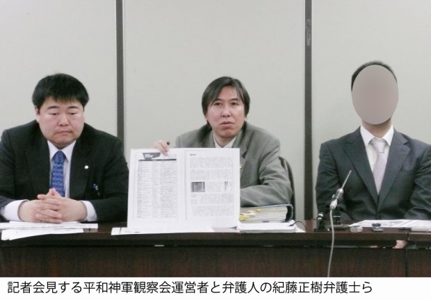

| バンズウィーク日本版 2017年12月1日創刊号: マスコミは沈黙 ネットでも書けない カルト宗教 (やや日刊カルト新聞社) | |
| やや日刊カルト新聞者 & 藤倉善郎 & エル・バカターレ & Algorab | |
| YAYANIKKAN KARUTO SHINBUNSHA (2017) | |
著作権放棄 グラビア
正気の沙汰じゃない イタコ御殿のおもてなし
東京・港区白金、住宅街のど真ん中に鎮座する幸福の科学の大悟館（教祖・大川隆法総裁の住居）。公道から写真を撮ろうとすると教団職員にとり囲まれ、写真をネットに投稿するとすかさずＢＡＮされる。
やや日刊カルト新聞・藤倉善郎総裁が幸福の科学の大悟館前で職員から取材を妨害され、その写真をツイッターに掲載すると、ツイッター社によって無断で削除されアカウントをロックされた。
本誌巻末・巻頭グラビアの写真は、藤倉総裁が著作権を「完全放棄」済み。誰でも自由に無料で使用できる。
近所に住む大物芸能人も「あれができるときは反対運動とかで大変だった」と振り返る、いわくつきのイタコ御殿。正面玄関前で教団職員が６人ほどで出迎えてくれた。外壁の仏陀像にカメラを向けると、さらに熱烈な歓迎ぶりを見せてくれる。
「やめてください！ 見世物じゃないんですから！」
「公道に向けて置いてあるのは、見てくださいということじゃないんですか！」
体当たりで客人をもてなすホスピタリティは一級品。会話に若干の不自由さは感じられるが、それもまた異文化情緒と思えば味わい深い。
幸福の科学本部広報局職員の服部輝成氏も、こちらのオーダーに誠実に応えてくれる。
「カメラの前に立たれると写っちゃいますよ」
「いいですよ」
「手しか写らないじゃないですか、何の資料写真ですか」
「（撮影を）阻止しているという資料写真です」
創刊挨拶
カルト集団の反社会的な実態を、インターネット上で違法でも何でもない手段と内容で投稿しているのに、カルト集団はすぐにプロバイダなどに抗議をする。ネット企業は簡単に抗議に屈し、事実関係もこちらの言い分も確認せず、ときには通告すらせず勝手に記事や写真を削除する。ネット企業がカルトの手先となって都合の悪い言論を一方的に抹殺しているのだ。
インターネットは個人が自由に情報や意見を発信できる場所ではなくなった。問題のある投稿が削除されるのは当然としても、通報至上主義で異議申し立ても受け付けられずに一方的に削除されるのでは、問題のない投稿も自由に行なえない。これでは「表現の自由」などイラストレーターＣＣで描いた餅だ。
そこで、プロバイダ等によって削除された「問題のない言論」を消滅させないため、不定期刊ながら本誌「バンニュース日本版」を創刊する。
「バン（ＢＡＮ）」は、追放を意味する英単語の「banish」「banishment」の略語。特定のネットサービスにおけるアカウント停止（垢ＢＡＮ）や投稿の削除などユーザーにとっての「死刑」を意味する。日本のマスコミ業界では、ネットで削除されるような危うい記事を書く記者を「ＢＡＮ記者」と呼ぶ（うそ）。
ソーシャルメディアなどで削除された、問題がなく意義があると思われる文章を雑誌という形で復活させバラまくことが、本誌の目的である。読者諸氏には、ここに掲載される記事の内容はもちろんのこと、このような記事や写真がインターネットで自由に掲載することができないという現状についても、ぜひとも真剣に考えていただきたい。
２０１７年 12 月１日
やや日刊カルト新聞社創始者兼総裁・藤倉善郎
削除記事 ＃２ やや日刊カルト新聞が取材写真 23 点の著作権放棄
表現の自由 「グロービート事件」「グーグル八分問題」を忘れた日本人
トレンド カルトが濫用する著作権、プロバイダが踏みにじる著作権法
削除記事 ＃４ 【論破プロジェクト】わての立ち位置
削除記事 ＃５ 幸福の科学のカルト先鋭化が始まった！
削除記事 ＃６ 幸福実現党・公選法違反の候補者たちが、次々関連記事を削除中！
削除記事 ＃７ 出たっ！ 顔面福笑い！
削除記事 ＃８ "自称・救世主"大川隆法の憂鬱
大失敗 ユーチューブ動画をＢＡＮできなかった国会議員・山本朋広
カルト
幸福の科学のネット検閲が始まった
『やや日刊カルト新聞』ほか一般市民の個人ブログやのツイッターなどで、幸福の科学をめぐる投稿が次々と削除されていることが、本誌創刊の直接のきっかけだ。幸福の科学は、１９９１年に「フライデー事件」と呼ばれる騒ぎを起こしている。批判的な記事を掲載した週刊誌『フライデー』への抗議と称して、教祖・大川隆法総裁の指示で発行元の講談社に信者のデモ隊をけしかけ、全国の信者を使って講談社に対して電話やＦＡＸを殺到させ、無関係な部署も含めて講談社全社の通信を麻痺させた。フライデーの記事とまったく関係がない日刊ゲンダイまで、なぜか巻き添えを食って電話やＦＡＸ、パソコン用の通信を麻痺させられた。
この事件は、幸福の科学の社会的評価を著しく低下させ、信者の不信も買い、教団を一時財政危機にまで陥れたと言われる。講談社へのデモは違法とされ賠償金も課せられた。
そんなこともあって幸福の科学は、その後、類似の騒ぎを起こしていない。しかし現在では、ネット上の個人の投稿までこまめにチェックし、プロバイダなどに抗議して削除させるようになった。本誌にも記事を収録した個人ブログ『ブログ・サンポール』は計 14 本の記事を削除されてきた。一般のツイッターユーザーが、幸福の科学関連の投稿を削除されたりアカウントをロックされたケースもある。このうち、異議申し立てによって措置が覆ったケースは１つもない。
やや日刊カルト新聞は、グーグル社のブログサービスを利用してサイトを開設し記事を配信している。 17 年 11 月に２本の記事が削除された。本誌に「 ツイッターが幸福の科学関連情報を強制削除 」、「 やや日刊カルト新聞が取材写真 23 点の著作権放棄 」として掲載している記事だ。同紙では 10 年にも「 学生を偽装勧誘する親鸞会の冊子を全公開 」と題する記事が削除された。このときは、グーグルから削除の通知があり、意義を申し立てたが無視された。しかし今回の２本の記事については、グーグル社からは削除した旨の通告すらなく、異議申し立ての方法も提示されない。それらを求めても一切の返答がない。これに先立って同紙・藤倉善郎総裁のツイッター投稿も削除されアカウントがロックされており、ツイッター社も異議申し立てに対して一切、回答しない。
一般ユーザーの投稿の削除の多くは、著作権を理由としたものだ。その中には、実際に著作権上の問題がありそうな投稿もある。一方で、やや日刊カルト新聞をめぐる削除は、幸福の科学職員のプライバシー等を口実としたものだ。
詳細は本誌収録の各記事で説明されているが、大まかには、藤倉総裁が公道から幸福の科学大悟館（教祖殿）の外観を撮影しようとしている場で幸福の科学職員が妨害目的で意図的に写真に写り込み、写真が掲載されると「プライバシー」「個人情報」を盾に削除を主張している、というもの。藤倉総裁は削除を拒否したが、おそらく同様の抗議を受けたのであろうツイッターやグーグル社が、藤倉総裁に何ら事実確認等をしないまま削除やアカウントのロックの措置に走った。
言うまでもなく、公道での取材は自由である。それを実力行使で妨害する幸福の科学の行為こそ反社会的だ。妨害のために教団職員自ら写真に写り込み、それを口実に記事が削除されてしまうなら、本来自由であるはずの取材活動もできなくなるし、それを妨害するカルト宗教の反社会的な実態を報じることもできなくなる。
一方で教祖・大川隆法総裁は、教団内で藤倉総裁の写真付きの手配書を配布していると教団内の映像で自ら語っている。藤倉総裁のプライバシーはどうした。
幸福の科学もどうかしているが、カルトが無茶なのは当たり前だ。カルトなんだから。むしろ、情報インフラであるはずのネット企業がカルトの言いなりでいることのほうが、どうかしている。
（藤倉善郎）
削除記事＃１ やや日刊カルト新聞
ツイッターが幸福の科学情報を強制削除＝教団の圧力か
ツイッター社は２０１７年 10 月 12 日、幸福の科学教団職員らによる取材妨害の様子を写した写真を含む、やや日刊カルト新聞社・藤倉善郎総裁の投稿２件を無断で削除。同時にアカウントをロックしたため、藤倉総裁はツイッターの投稿も閲覧もできない状態となった。幸福の科学からの抗議を受けての措置と思われ、藤倉総裁は「ツイッター社はカルトの手先」などと厳しく非難している。なおアカウントがロックされた同日、幸福の科学は内容証明郵便で藤倉総裁宛に抗議書を送付。ツイッターに投稿した写真の削除を要求した。藤倉総裁の自宅宛に幸福の科学から内容証明郵便が届くのは、今年９月１日以来、 41 日ぶり３度目。
いわれなき削除とロック
10 月 12 日未明、ツイッター社が藤倉総裁のアカウントをロックし、メールでその旨を通知してきた。ほかのユーザーから藤倉総裁の投稿等を閲覧することはできるものの、藤倉総裁自身はツイッターの閲覧、投稿、ＤＭなど、あらゆる機能が使用不能となっている。
藤倉総裁が確認したところ、２つの投稿が削除されていることがわかったという。
この投稿
は
10
月８日に藤倉総裁が東京・港区白金にある幸福の科学大悟館（教祖殿）の外観写真を公道から撮影しようとした際に、教団職員から妨害や尾行をされたことを報告するもの。写真には撮影を妨害した職員たちの姿も写っていた。
このとき、最大６人ほどで取り囲んで威圧しながら撮影を妨害する教団職員たちに、藤倉総裁は「記事のための資料写真の撮影」と告げ、こう警告した。
「そこをどいてくれないと写真に写っちゃいますよ」
「教祖殿の全景の資料写真を撮りたいのに、これじゃあなた方が入っちゃいますよ」
これに対して、教団本部の広報局職員が、こう言い放った。
「それはそれでしょうがないですね。そういう資料写真にしたらいいんじゃないですか」
「いいですよ」
「（取材を）阻止している資料写真です」
現場での取材対応を取り仕切る立場にある教団本部の広報局職員からの、この場の職員を代表してのお言葉だから、この場の職員は全員、公開されることが前提である写真に写り込むことを承諾したということ。念のため藤倉総裁は、「これじゃイカれた宗教の資料写真になっちゃうじゃないですか」と教えてあげたが、それでも職員らは妨害を続け、「イカれた宗教」として写真に写り込むことすら事実上、承諾した。
ツイッターに投稿された写真は全て公道から撮影されたもの。藤倉総裁が大悟館前を離れ、道を２本挟んで１００㍍ほどの距離から大悟館を撮影しようとした際にも、職員はなおもカメラの前に手をかざして妨害を続けた。
藤倉総裁がツイッターに投稿した写真は、教団職員らが写り込むことを承諾したものである上、幸福の科学の反社会的な実態を世に知らしめる公益性を伴ったものでもある。写真と同時に投稿された文章も、ただ現場で起こった事実を述べただけの内容であり、攻撃的な要素どころか批判すらしていない。
ツイッター社から投稿を削除されたり、アカウントをロックされたりするいわれは全くないものだ。
理由の明示も事実確認もなし
ツイッター社からは、藤倉総裁に対して投稿を削除した旨の通告はない。アカウントをロックしたことについての事後通告があっただけだ。事情の問い合わせも一切なかったという。どの投稿にどのような問題があったのかという具体的な情報もなく、ツイッターのどのような「ルール」に抵触したのかすら示されていないのだ。
藤倉総裁がロックを解除するための手続きを行おうとして初めて、所定の投稿の削除を求める表示が現れた。ここでようやく、ロックの原因とされているのが幸福の科学についての投稿であることが知らされた。
指定されている投稿を削除すればロックが解除されるということのように見える。対象となる投稿は、すでにツイッター社が無断で削除済みなのに。藤倉総裁は削除には同意せず 、 10 月 12 日のうちに前述の事情をツイッター社に伝え、処分についての異議申し立てを行なった。
すでにロック中なのに、またロック
ところ
が
10
月
14
日、ツイッター社は藤倉総裁の異議申し立てに回答することなく、改めてロックを通告するメールを送りつけてきた。この時の驚きを、藤倉総裁はこう振り返る。
「さすがのオレも、すでにロックされているのに、さらにロックされるのかと思ってビビったね。ロックにも限度ってものがあるぜロケンロール！」
藤倉総裁は、ツイッター社に対し、以下の点について回答を要求した（要約）。
・異議申し立てに対する回答
・「攻撃的な行為に関するルール違反」とは、具体的にどの投稿についてのことなのか
・すでにロックされているのに、さらにロックされるとはどういうことなのか
ツイッター社からは一切、返答がない。異議申し立てをする「アカウントをロックした」「アカウントを凍結した」などと新たな通告が来るだけ。藤倉総裁はそのたびに異議申し立てを行なっている。最終的に、ツイッター社からのロック通告 は 18 回、凍結通告は３回。藤倉総裁からの異議申し立て は 23 回に及んだ。
ツイッター側が通告してくる処分は、アカウントの「ロック」だったのが「凍結」に変わったりする（実際に行なわれている処分はロックと思われる）。処分の理由も「プライバシー侵害」だったり「攻撃的な行為」だったり、コロコロ変わる。ツイッター社自身、何を根拠にどんな処分を下したのかわからなくなっているのだ。
公道で取材者を威圧し妨害された被害者がその実情をツイッターに投稿すると、その行為が「攻撃的」「プライバシー侵害」などとされアカウントをロックされてしまう。こんなことでは、ツイッター社はカルトの手先どころか、あらゆる「批判されてしかるべき者」の手先になってしまう。
藤倉総裁宅に内容証明
アカウントがロックされたのと同じ日、藤倉総裁のもとに幸福の科学の代理人弁護士から内容証明郵便が届いた。幸福の科学が藤倉総裁に内容証明郵便で抗議するのは 、 41 日ぶり３度目。今回の抗議は、要約すると以下のような趣旨だった。
・ 10 月８日に立ち入り禁止の参道（私有地）に侵入した。不法侵入であり礼拝所不敬罪である。こうした行為を行なわないよう強く警告する。
・職員の顔写真をツイッターに投稿し、肖像権とプライバシー権を侵害している。速やかに削除せよ。
大悟館周辺はほぼ全てが公道だ。「参道」との表示があったのは、左の写真の通り大悟館門前のごく僅かなエリア。藤倉総裁はここには立ち入っていない。また、取材の開始から終了まで、藤倉総裁につきまとっていた職員らが「ここは立入禁止の私有地である」旨を主張した場面は一切なかった。ツイッターに投稿された写真は全て、公道から撮影されたものである。
つまり幸福の科学の抗議文にある主張は全くの虚偽。藤倉総裁は「立ち入り禁止の参道（私有地）」には立ち入っていないし、職員らは自ら望んで写真に写り込んできた。「肖像権とプライバシー権を侵害」との主張すらもデタラメだ。
仮にツイッターに「通報」し写真の削除を求めたのが幸福の科学なのだとすると、その主張には正当性がないばかりか完全な「虚偽通報」。また今回の措置でツイッター社が不当にユーザーの表現活動を妨害していることも明らかである。
「表現の自由」の危機予言が的中
９ 月 19 日、『日本会議の研究』（扶桑社新書）で知られる菅野完氏のツイッターアカウントが「永久凍結」された。藤倉総裁の「ロック」と違い、ツイッター社からはどの投稿が問題なのかといった具体的な情報が一切開示されず、原因を類推することすらできないものだった。この菅野氏のアカウント凍結は、いまだ続いている。
菅野氏の凍結は他のユーザーが「通報」した結果である可能性が高いことから、藤倉総裁はツイッターで、こう指摘していた。
〈ほんと、そういうこと。こんなプロセスで凍結されちゃうなら、政治家や企業やカルト宗教でも一市民でもTwitterに通報しまくれば容易に批判を抑制できる上、通報した事実も明るみに出ないから理不尽な通報によって炎上するリスクもない。通報者天国。〉
今回、表現の自由に関する藤倉総裁の危惧が現実のものになった形だ。この点について、藤倉総裁自身はこう語る。
「大川隆法さんの予言はなかなか当たらないのに、ぼくの予言が真っ先に当たっちゃって悪いねえ。ぼくの予言を成就させちゃった幸福の科学の職員たちがエル・カンターレから叱られないか心配です。こんなカルト集団の手先になっているツイッター社は、恥を知るべき」
同社広報局のツイッターアカウントがユーザーに向けて、藤倉総裁のアカウントのロックが続いた場合の対応について意見を募集したところ、「（問題とされる）投稿を削除する」は最下位。第１位は「ツイッター社前でのロックコンサート開催」だった。
（藤倉善郎）
本記事は、『やや日刊カルト新聞』に２０１７年 10 月 15 日に掲載されグーグル社によって削除されたものを改訂した。
削除記事＃２ やや日刊カルト新聞
やや日刊カルト新聞社が 取材写真 23 点の著作権放棄
ツイッターに投稿した幸福の科学大悟館（教祖殿）と撮影を妨害する教団職員らの写真をツイッター社から無断で削除されアカウントをロックされた『やや日刊カルト新聞』の藤倉善郎総裁。なんと大悟館周辺で撮影した資料写真 23 点について著作権を放棄すると表明し、ネットでばらまき始めた。
藤倉総裁 は 10 月８日、東京・港区白金にある幸福の科学大悟館（教祖殿）を公道から撮影しようとしたところ、最大で６人ほどの教団職員に取り囲まれ、撮影を妨害された。藤倉総裁は、これらの写真をその日のうちにツイッターに投稿。しか し 10 月 12 日、幸福の科学から抗議を受けたと思われるツイッター社が、藤倉総裁に無断で関連投稿２件を削除し、藤倉総裁のアカウントをロックした。現在も藤倉総裁はツイッターのすべての機能を利用できない状態だ。
これに関連して藤倉総裁 は 10 月 17 日、ツイッターにまだ投稿していなかった写真も含め、大悟館周辺で撮影した 計 23 点の写真について、著作権を放棄すると表明した。今後、営利・非営利を問わず誰でも、藤倉総裁の承諾なく自由にこれらの写真を使用することができる。改変も可能だ。
今回の措置は、幸福の科学の実態を示す写真をツイッターに頼ることなく多くの人に見てもらうことが狙い。
23 点の写真は全て公道から撮影したもので、一切違法性はない。また、教団職員の顔が写っている写真もあるが、公開を前提とする資料写真に職員らの顔が写ることについて教団本部の広報局職員が承諾済み。そのため肖像権の侵害にもあたらない。幸福の科学の実態や大悟館についての「資料写真」といえる範囲内での使用であれば、教団や職員に掲載許可を求める必要もない。
「一般メディアが記事で使用するもよし、個人が幸福の科学の実態を説明する際に使用するもよし。ほかにも、〝大悟館資料写真カレンダー〟を作ってコミケで売ってもいいし、親しい友人に〝大悟館資料写真はがき〟として送りつけるのも楽しいですね。ちなみにぼくは、〝大悟館資料写真ぬりえ〟を作ってみました。みなさんも、いろんな使い方を考えてみてね。あ、ツイッターに投稿するとアカウントをロックされる可能性があるので気をつけて。あそこ、表現の自由とかないから」
（藤倉善郎）
本記事は『やや日刊カルト新聞』に２０１７年 10 月 17 日に掲載されグーグル社によって削除されたものを改訂した。著作権が放棄された写真の一部は本誌巻頭・巻末グラビアに掲載。
カルトの御用聞きが「インフラ」ヅラする時代
「グロービート事件」「グーグル八分問題」を忘れた日本人
事前通知もない突然の「ロック」
10 月 12 日、突然、筆者のツイッターアカウントを「ロック」したとツイッター社からメールで通告された。ツイッターにログインしても、「ロックされています」と表示されるばかりで、投稿も閲覧もダイレクトメッセージ（ＤＭ）もできない。誰かが筆者に送ってくれているであろうＤＭを読むことすらできない。ツイッター社からは、なぜこのような措置をとるのかという具体的な理由を示す通知は一切なかった。
ツイッターでは今年８月、ネット上で「絵師」と呼ばれるマンガ家やイラスト作家たちのアカウントの大量凍結騒ぎがあった。９月には『日本会議の研究』（扶桑社新書）で知られる著述家・菅野完氏の永久凍結。
個別の原因はさまざまあるだろうが、共通している点がある。凍結やロックという措置を受けたユーザー自身も、措置の理由や具体的根拠が「わからない」という点だ。理由は簡単。ツイッター社が、そうした説明を一切しないからだ。形式上は異議申し立てが可能だが、申し立ててもツイッター社は無視する。処分の根拠が不明だと回答を求めても、回答は来ない。
さらに問題なのは、ツイッターが一律の判断基準に基づいて平等にユーザーを処分した結果ではなく、第三者からの通報（クレーム）を受けて処分を実行していると思われる点だ。
通報があれば、根拠も示さず異議も受け付けずアカウントを使用不能にする。ルールの内容に問題があるのではなく、運用プロセスの致命的な欠陥であることは明らかだ。
ツイッターが一方的な「通報至上主義」をとるなら、企業や団体、公権力が言論封殺目的で特定の発言者をツイッターから抹殺することも可能だ。個人が嫌がらせや逆恨み、場合によっては面白半分で同じことをすることもできてしまう。事実上の「情報インフラ」としてネット上に君臨するツイッターが、果たしてここまで極端に、そして一方的にユーザーの表現の自由をないがしろにする存在であっていいのだろうか。
こうした問題は、何も目新しいものではない。ツイッターの登場以前にも、ネットサービスと表現の自由や知る権利との兼ね合いについての教訓を残した問題や事件がある。それらと比較しながら、ツイッター問題を考えていきたい。
「事実」を書けない
ここで、ツイッター社による用語を改めて解説しておこう。「凍結」はアカウントそのものが停止し、ほかのユーザーからも閲覧できない状態。「ロック」も、ツイッターの機能を一切使用できなくなるのでアカウント停止ではあるが、それ以前の投稿は他のユーザーから閲覧できる。紛らわしいが、他のユーザーから見ると「凍結」されたアカウントはもはや存在しないも同然で、「ロック」されたアカウントは、コミュニケーションを取ることは一切できずに過去の投稿だけが墓標のようにただ残されている状態だ。
凍結にくらべてロックのほうが軽い処分とされており、問題があるとして指定された投稿を削除したり一定期間が経過したりすると復活することがあるようだ。形式上、凍結の場合も異議申し立てによって復活できる場合があるかのようにツイッター社は自社サイトに掲載している。一方で、さらに厳しい「永久凍結」という処分もある。
筆者の場合は、「ロック」「一定期間の利用制限」といった趣旨の通告を受けているので、比較的軽い処分と言えそうだ。
経緯は、こうだ。
10 月８日、筆者は東京・港区白金にある幸福の科学の大悟館（教祖殿）を公道から撮影しようとした。大悟館は、２０００年に完成した教祖・大川隆法総裁の住居。大通りから離れた閑静な住宅街で、巨大な建物の外壁に飾られた巨大なヘルメス像と金ピカの仏像が公道を見下ろしている。初めて通りかかった人なら、おそらく誰でもびっくりして凝視せずにはおれない、異様な光景だ。
建設当時は、周囲の住民の反対運動も起こったが、幸福の科学は「名誉毀損」などと主張して、反対運動に関わる住民に対して個別に内容証明郵便を送りつけ威圧。住民運動を萎縮させて大悟館を完成させたのだと、ある住民は説明する。
「建設時の説明の時には、教団は建物の外壁に像などは設置しないと言っていた。でも教祖殿が完成して何年か経ったら、でかい仏像とか、何やらギリシャ彫刻みたいなでかい像が外壁に取り付けられた。住民には何の説明もありませんでしたよ。文句を言いたい気持ちはあるが、裁判だとか言われると面倒くさいから、何も言えない」（同）
これ は 11 年に筆者が大悟館周辺で住民から聞かされた話だ。住民を騙して建設し、完成か ら 10 年以上たってもなお周辺住民を萎縮させている、いわくつきの建造物なのである。
その大悟館だが、筆者はもう何年も前に資料写真として撮影して以来、足を運んでいなかった。今回、行ってみると、大悟館の門前に警備員用のボックスが設置されており、警備員が常時、道路を監視している。以前はなかった警備体制だ。
建設時には反対運動の関係者を威圧して黙らせたくせに、いまではその大悟館が近隣でのマンション建設に反対する横断幕を掲げている。建物の外観自体が、教団の支離滅裂さを表しているという、宗教施設の中でも稀な「物件」になっていた。
筆者が公道から写真を撮り始めると、最大で６人ほどの教団職員がかけつけ、筆者を取り囲んでカメラに手をかざして妨害した。これでは職員も写真に写り込んでしまうと説明したが、教団本部からかけつけた広報局職員が「それはそれでしょうがない」「（撮影を）阻止しているという資料写真だ」などと言い放ち、職員らは妨害を続けた。
公道での取材を多人数で物理的に妨害し、自ら写真に写り込んできただけではなく、それを言葉の上でも承諾していたのである。筆者が撮影を諦めてその場を離れても職員らは尾行やつきまといを続け、最後は、通りかかったおまわりさんに事情を話し、職員らにつきまといをやめさせた。
筆者は撮影を邪魔され尾行されたという事実のみを文章で説明し、職員らが一緒に写った大悟館の写真を添えてツイッターに投稿した。とくだん批判的な文章はつけていない。
ところ が 10 月 12 日になって、突然アカウントがロックされた。他のユーザーからの指摘で、大悟館での様子を投稿した２件の投稿が削除されていることを知った。ツイッター社からは、アカウントをロックしたという通知が来ただけで、投稿の削除については事後報告すらない。
同日、筆者の自宅には幸福の科学の代理人弁護士の名で、抗議文が内容証明郵便で届いた。筆者が撮影の際に幸福の科学の参道（私有地）に違法に立ち入ったという虚偽の主張が書かれ、職員の肖像権とプライバシー権を侵害しているのでツイッターの投稿を削除せよ、という。
ツイッターでは、アカウントをロックされた場合、問題とされる投稿の削除か異議申し立てによってロックを解除するという手順がログイン画面に表示される。筆者の場合はそこに、前述の幸福の科学関連の投稿を削除するか異議申し立てをすることを求める画面が表示された（そもそも投稿はすでにツイッター社が無断で削除済みなのだが）。ここで初めて、ロックの原因が大悟館についての投稿であることがわかった。
これら一連の事実から、原因は間違いなく幸福の科学に関する投稿であり、幸福の科学がツイッターに抗議した結果である可能性が濃厚であることがわかる。
ツイッター社には事実関係を説明し、法律にもツイッターのルールにも違反してない旨の異議申し立てを行なったが、改めて「ロックする」「一部利用制限されている」という通知が来るのみ。処分の理由は、当初は「攻撃的な行為」とされていたのに、異議申し立てをすると「個人情報と機密情報の投稿に関するルール違反」という通知が来た。
しかしツイッターの「個人情報と機密情報の投稿に関するルール」を読んでも、今回の筆者の投稿に該当する項目がない。
「撮影されている人物の同意なく撮影または配布された、私的な画像や動画」の投稿を禁じているが、前述の通り、写真に写っていた職員らは写り込むことを承諾し自らすすんでカメラのフレームに入ってきた。「適用法令に基づき個人的なものと考えられる画像や動画」「個人的なものと考えられる住所や場所」も禁じられているが、筆者が投稿した写真は全て公道で撮影したものだ。幸福の科学大悟館は、公益法人である宗教法人幸福の科学の施設であって教祖・大川隆法総裁や職員たちの「個人的な」ものではない。どのような法令に照らし合わせても「個人的なものと考えられる住所や場所」についての投稿ではない。
違法性もなければ、ツイッターのルールにも違反していない。
クレーマーの一人勝ち
ツイッターに異議申し立てをしても回答は一切なく、ただ「ロックしました」などとする通告だけが送りつけられてくる。こちらはまた異議を申し立て、回答を要求する。ツイッター社からのロック通告などの一方的な通告 は 21 通、筆者からの異議申し立て は 23 通という異常なやり取りになった。
公道での取材を大人数で威圧し物理的に妨害するという宗教団体の反社会的な事実を世に伝える投稿が、何の根拠もなく削除される。しかもアカウントがロックされ、この件と関係のない発言やＤＭでの個人的な連絡すらも行なえない。
反社会的な宗教団体が、都合の悪い言論を潰すために抗議等をするのは、当たり前といえば当たり前だ。反社会的な集団なのだから、言いがかりだろうが暴論だろうがとにかく抗議してくる。それをジャッジする立場の者が法律や常識に基づいて判断すれば何の問題もないのだが、現在のツイッター社は、むしろ積極的に反社会的な集団の手先となって動いている。
筆者は不本意ながら投稿の削除（もうされているが）に同意し、アカウント は 40 日ぶりに復活した。しかし今後も幸福の科学が気に食わない投稿を筆者が行なえば、そのたびに「ロック」が繰り返され、いずれは「凍結」に至るだろう。
一方で、幸福の科学の公式アカウントはロックされないし、ツイッターには教団の広告投稿が流れ続ける。かつて幸福の科学から金をもらって霊言本の出版イベントに出演した佐々木俊尚氏は、ツイッターで「幸福の科学はカルトではない」と断定した。もちろん、こうしたヨイショ発言が削除されることはなく、批判的な言論だけが弾圧される。
市民すら市民の言論を弾圧する
筆者や菅野氏に先立って、ツイッターによる一方的な凍結被害に遭っていたアカウントが複数、存在する。今年８月にあった「絵師大量凍結」と呼ばれる騒動である。イラスト作品を投稿するアカウントやマンガ家のアカウントが、次々と凍結されたのだ。
目的は不明だが、このとき、通報によって特定のアカウントを凍結に追い込む手法を広めたり、特定のマンガ家などを名指しして凍結に追い込もうとする「犯行声明」的な投稿をしたりするユーザーがいた。その方法は単純で、たとえば「死ね」「殺す」などの攻撃的なワードをターゲットの過去の投稿から探し出して、それを理由として「通報」するというものだ。
この騒ぎの中で「永久凍結」された人物の中に、やしろあずき氏という人気マンガ家がいる。やしろ氏は、自身のブログ （ https://ameblo.jp/yashiro-azuki / ）で経緯を記している。当初、ツイッター社から凍結の原因となった投稿がどれなのかすら告知されていなかったようだ。
〈普通にルール違反となるツイートを僕がしている可能性も大いにあります。ツイッタールールにある「脅迫」に値するツイートですね。僕は５年ほど前、学生時代からツイッターをやっていますし、その時は友達とふざけあって過激派みたいなツイートをしていた記憶もあるので、その時のツイート内容を通報された可能性も高いと思います。〉（ブログより）
〈現状、敵意のない「死ね」とか「殺す」というワードが作品内にあるだけで通報によりアカウントを凍結されてしまうのであれば、もうツイッター上で作品を発表する事なんて怖すぎてできなくなりますし、今回の事件で凍結を簡単にさせてしまう事ができると認知された事で、心無いユーザーによって今後も凍結させられてしまう作家さんが増えていく可能性だってあります。〉（ブログより）
弁護士に依頼するなどしてツイッター社に様々なはたらきかけをした結果、１週間ほどで「永久凍結」は解除されたようだ。しかし、それは飽くまでもやしろ氏のケース。いまだ凍結を解除されていない「絵師」もいるようで、原因は不明だが現在は「格闘ゲーマーの大量凍結」という騒ぎが、ツイッター内で起きているようだ。
意図的に特定ユーザーのアカウントを利用不能にするということが、いち市民にも簡単にできてしまう。しかもそれは、通報する者にとって深刻な権利侵害が生じている場合でなくて構わないようだ。「死ね」と言われた本人ではない人間が「通報」することでアカウントを凍結させることも可能なのだから。
何かを批判したり、誰かにとって都合が悪い事実を投稿したりしたわけでもないユーザーの表現の自由すら脅かされている。
表現 の 自由 はすでに死んでいる
絵師や筆者のケースでは、状況やタイミングから、通報者の存在を推定できることから、ツイッターの通報至上主義の問題点が見えやすい。しかし、菅野完氏のケースでは、ツイッター社から「永久凍結」の理由や根拠を具体的に示されていないばかりか、通報によるものなのかどうかを判断できる情報が全くない。
商売敵、思想や意見が対立する者、乱暴な言葉づかいをされて私怨を抱いている者、単なる愉快犯、宗教団体、政治団体、公権力。どのような人物や組織がどのような動機で通報したのかわからない。
たとえるなら、一度容疑をかけられれば、何の容疑なのかも容疑をかけられる理由も、それがどの法律に触れているのかも説明されないまま一方的に死刑判決を言い渡され、控訴も認められず即日執行されるようなものだ。犯罪を行なったかもしれないという通報を受けて実際どうなのかを検証することなく容疑者を皆殺しにしてしまえば、さぞかし治安の良い国ができる。ツイッターがやっているのは、そういうことだ。
こうした仕組みである以上、すでにツイッターには「表現の自由」などないのである。
ラーメン花月の「グロービートジャパン」事件（２００３～２０１０）
ツイッター は 08 年にスタートしたサービスだ。しかしこうした問題の構造は特段新しいものではない。
03 年、「グロービート事件」と呼ばれる事件が起こった。『平和神軍観察会 逝き逝きて平和神軍』というテキストサイトに対して、全国展開のラーメンチェーン「ラーメン花月」を運営する「グロービートジャパン」が訴訟を起こしたのだ。
かつて人気を誇ったＳＮＳ「ミクシィ」のサービス開始 が 04 年２月。ＳＮＳ流行より前に発生した事件だ。

グロービート社の代表取締役社長・北条晋一（本名：黒須伸一）氏の父親である黒須英治（中杉弘）氏は、同社 の 51 ％の株を所有し、同社から「給与」名目で年間４千万円前後の金銭を受け取っていた一方で、「日本平和神軍」と名乗る「右翼カルト」集団の総統として、朝鮮人や中国人に対する差別的な説法などを行なっている。
当時、『平和神軍観察会』には、こうした事実やグロービート社と黒須氏あるいは日本平和神軍とを結びつける資料などが掲載されていた。
『平和神軍観察会』の運営者は、当時会社員の男性。ジャーナリスト等ではない。男性は、日本平和神軍関係者と思しき人物から自宅を特定され脅迫まがいのことも受けたが、屈せずにサイトを運営していた。
しか し 03 年、グロービート社が名誉毀損と営業妨害を理由に３１５０万円の損害賠償を求めて男性を提訴。同時に刑事告訴も行なっており、男性 は 04 年に起訴された。
男性は「自分が泣き寝入りすればネットの表現の自由が萎縮しかねない」として、民事提訴から７年間、裁判を闘った。膨大なウェブサイトの内容のうち、ごく一部の事実関係の誤りや揶揄的な表現が問題視され、民事で は 77 万円の賠償命令が確定し、刑事では有罪（罰 金 30 万円）が確定した。賠償額も罰金も多額とはいえないが、敗訴である。
民事の東京高裁判決は、グロービート社と日本平和神軍の関係について「一体又は極めて密接なものであるとまでいうことはできない」として、両者に密接な関係があるとする男性の主張を退けた。しかし同時に「一定の関係があると評価することは誤りではない」とも認めている。しかも民事裁判の高裁判決の後、刑事裁判では、前述のように黒須氏がグロービート社の過半数の株式を所有し、少なくと も 02 ～ 05 年度に会長として計１億５０００万円以上の報酬をグロービート社から受け取っていたことも判明した。そもそもグロービート社が日本平和神軍との関係を否定して起こした訴訟なのに、グロービート社が勝訴すると日本平和神軍のウェブサイトに「勝利宣言」が掲載されるということも起こった。
この事件は判決が出るたび、ネット上でも一般メディアでもかなり注目された。新聞の多くは「ネット上の誹謗中傷問題」という程度の扱いしかしなかったが、雑誌やネットメディアは『平和神軍観察会』のサイトの内容とそれに対する裁判所の判断、グロービート社が起こした訴訟のＳＬＡＰＰ（嫌がらせ訴訟）的な側面にフォーカスした。
しかし、『平和神軍観察会』をめぐっては、裁判になる前の段階で、現在のツイッター社の凍結問題とよく似た事が起こっていた。
『平和神軍観察会』は、いちど抗議を受けて掲載するプロバイダを変えている。移転先は「ぷらら」だった。ぷららはグロービート社からサイトを削除するよう抗議を受け、『平和神軍観察会』運営者の男性に連絡。男性は異議を唱えたが、ぷららは一方的にサイトの削除を決めた。今回、筆者は改めてこの運営者の男性に話を聞いた。
「当時、私はサイトの置き場所だけではなく、ネット接続のプロバイダ契約もぷららを利用していました。『平和神軍観察会』の削除を求めてきたぷららは、一方的にサイトを削除するだけではなく、プロバイダ契約まで即刻解除すると通告してきたんです。いきなりそんなことをされたらネット接続もできなくなるし、メールアドレスも消えるので仕事もできなくなる。あまりに生活上の支障が大きすぎると主張して何とか１～２か月の猶予をもらいましたが、結局はサイトだけではなくプロバイダ契約もメールアカウントもすべて削除されました」（運営者の男性）
すでに情報や通信のインフラの地位を確立しているネットサービスのこうした対応は、表現の自由どころか基本的な生活環境すら危機に陥れる。「インフラ」なのだから当然だ。
ツイッターは、アカウントをロックされると、ロックの解除のための画面（投稿の削除に同意するか異議申し立てをするかの選択を求める画面）しか表示されない。ログアウトしても、スマートフォンのアプリやブラウザでは全くツイッターを閲覧できない。極論すれば、いま災害が起こっても筆者はツイッターで状況を把握することはできないし、被災地で孤立してもツイッターで広く救助を要請することはできない。
個別の投稿の削除だけであれば「表現の自由」の問題だが、アカウント自体を使用不能にすることは、生命にすら関わりかねない「インフラ」を没収するということだ。
検索エンジンの公共性が議論になったグーグル八分（２００４～）
表現の自由という発信者側の権利だけではない。「知る権利」という用語が正しいかどうかはわからないが、情報を受け取る側のメリットを大きく損なう危険性が指摘されたのが、２００４年に注目された「グーグル八分問題」だ。
発端は、悪徳商法に関する情報交換を目的とした『悪徳商法？マニアックス』という老舗サイトの掲示板に、電話勧誘等で宝石販売を行なうウェディング社が悪徳商法なのではないかとする情報が投稿されたこと。社長に前科があることなども投稿され、ウェディング社が『悪徳商法？マニアックス』の管理人・Ｂｅｙｏｎｄ氏に対して６０００万円を請求する訴訟を起こした（後にウェディング社が訴訟放棄して終了）。
このときウェディング社は、グーグルに対しても抗議。検索結果に『悪徳商法？マニアックス』が表示されないように要求し、グーグルが従った。これが「グーグル八分問題」だ。やがて『悪徳商法？マニアックス』内で前述の日本平和神軍の話題が言及されるようになると、そのページもグーグル八分にあうようになった。当時、『悪徳商法？マニアックス』とは別にマンション関係の有名企業を批判するサイトも、グーグル八分にあっていた。
ウェディングが起こした一連の問題の総称が「ウェディング問題」で、その一部として起こったグーグルをめぐる問題が「グーグル八分問題」だ。
グーグル八分は、アダルトサイトのフィルタリングや、ＳＥＯテクニックを悪用する「検索エンジンスパム」と呼ばれるサイトを検索結果から除外するといった、グーグル側が自ら導入し機械的に処理する仕組みとは根本的に違う。特定の企業などの求めに応じ、グーグルが「検閲代行」をするようなものだ。
私企業とは言え、当時すでに検索エンジンの中で圧倒的なシェアを誇り、人々がネットで情報を得る上で欠かせない存在になっていたグーグルにも、公益に関わるサービスを提供する上での責任があるのではないか。そのような議論を呼んだ。
現在でも、グーグルの検索結果には時折、検索結果が削除されていることを示す注意書きが末尾に表示されることがある。グーグル八分は今も続いているが、こうして削除の理由を明示することで透明性を図っているつもりなのだろう。
グーグルもツイッター同様、いち私企業にすぎない。しかし圧倒的なシェアを誇り国民の情報収集に欠かせない存在であればこそ、表現する側だけではなく表現を受け取る側に対する公益上の責任もある。
「私企業がどんなルールでサービスを運用しようが自由」だとか「無料サービスを使わせてもらっておいてガタガタ言うな」といった言説では正当化できない。
問題の構造は何ら新しくないが......
このように、ツイッターがユーザーを処分する際の不透明なプロセスの問題には、とくだん新しさはない。新しいのは、ツイッターという法律を無視する反社会的な巨大サービスが「インフラ」ヅラしてネット上に横たわっているという状況だけだ。
「グロービート事件」の前年の２００２年、プロバイダ責任制限法（特定電気通信役務提供者の損害賠償責任の制限及び発信者情報の開示に関する法律）が施行されている。同法では、ネットの投稿で権利を侵害されたと主張する側がプロバイダに「発信者情報の開示」や「送信防止措置」を請求した際の、プロバイダ側の対応手順と責任について定めている。
こうした法律があること自体、ネットサービスの提供者が表現する側と表現をやめさせたがっている側との板挟みにあう状況について 、 15 年も前に議論がなされ一定の結論が出たということだ。
同法の第３条の２では、プロバイダは権利を侵害されたとするものからの申し出によって「送信防止措置」を講じた場合、発信者に損害を与えたとしてもプロバイダが賠償責任を負わなくてよいとされる条件が定められている。
まず１つ目は、当該情報の送信防止のために必要な限度において行なわれたものである場合。これを満たした上で、さらに２つの条件がある。
不当な権利侵害が行なわれていると信じるに足る理由があった場合か、あるいは送信防止措置に同意するかどうかを発信者に照会し７日以内に同意しない旨の申し出がなかった場合だ。
グロービート事件では、「ぷらら」はサイトの削除やプロバイダ契約の解除を実行する前に、『平和神軍観察会』の運営者男性に同意するかどうかを確認した。この点ではこの法律に沿った手順だ。サイトの削除だけではなくプロバイダ契約の一方的な解除というぷららの行為は「当該情報の送信防止のために必要な限度」とは思えないが、男性は「ぷらら」との間では訴訟を行なっておらず、この点について裁判所の判断は下されていない。
ツイッターについては、どうだろう。
ツイッターはアカウントを使用不能にする際、理由もルール違反と判断した根拠も示さない。「不当な権利侵害が行なわれていると信じるに足る理由」をツイッター社は主張しない。ユーザーに対して一切の事前通告も意思確認もしていないため、「送信防止措置に同意するかどうかを発信者に照会し、７日以内に同意しない旨の申し出がなかった場合」には当てはまらない。
そもそも、凍結やブロックは抗議の対象となった投稿と無関係の投稿や私信の送受信まで不能にしているのだから、大前提となる「当該情報の送信防止のために必要な限度」を明らかに超えている。プロバイダ責任制限法が定める、賠償責任を負わなくていい条件を１つたりとも満たさない。
そして同法が賠償責任を負わなくてよいと定めているのは、権利を侵害された者からの申し立てがあった場合だ。ツイッターの事例では、権利を侵害された当事者ではない者からの通報によるものと思われるケースもある。そもそも通報者が権利者なのかどうかすら、ツイッター社は発信者に対して説明しない。
ツイッターはプロバイダ責任制限法の全てをないがしろにしている。凍結やロックをされたユーザーが弁護士に依頼したり裁判を起こしたりすれば、それなりにツイッターの責任を追求できるのではないだろうか。しかし、弁護士をつけなければたった１４０文字の文章と写真も投稿できないサービスなど、その時点で「インフラ」としては致命的な欠陥品だ。
ツイッターのルールの内容が気に食わないという話ではない。ユーザーの利益を一方的に害するプロセスでルールが運用されていることを批判しているのだ。これは、ルールが正しいかどうか以前の問題なのである。
いま、ツイッターをめぐる言論環境は、「グロービート事件」や「グーグル八分問題」が騒がれた時代よりはるかに劣化している。自由がなく漠然と強烈に萎縮しながら投稿するしかないＳＮＳ。宗教団体等が「都合が悪い」と考える事実を発信することも見つけることもできないＳＮＳ。利己的な動機や「ネタ」としてですら、他者の表現を潰せてしまうＳＮＳ。私達は、こんなＳＮＳ企業に飼いならされた豚でいていいのか。こんなサービスが「インフラ」であっていいのか。
ツイッターに対して差別やヘイトスピーチの規制強化を求める意見もある。規制の内容次第では筆者も賛同しないではないが、少なくとも現状のツイッターにそれを求めるのは非常に危険だ。公正なプロセスで対処する能力を持たないＳＮＳ企業にそんなことをさせれば、差別やヘイトスピーチ以外の巻き添えを大量に生み出す。むしろ合理的な差別規制を求める上でも、その前段階として公正なプロセスの確立は不可欠だ。
いまいちど、ネット上の表現の自由をめぐる過去の事件が残した教訓や、その事件で自由や権利を守ろうと闘った人々の問題意識に、目を向けてみてほしい。
（藤倉善郎）
本記事は、２０１７年 10 月 22 日と 25 日の２回に分けて『ハーバービジネスオンライン』に掲載されたものを改訂した。『ハーバービジネスオンライン』には幸福の科学から写真を削除するよう抗議が来たが、編集部は教団職員の顔部分にモザイクを入れることで対応した。
削除記事＃３ やや日刊カルト新聞
学生を偽装勧誘する 親鸞会の冊子を全公開
大学生を相手に、正体を隠したダミーサークルによる勧誘を行う浄土真宗親鸞会。彼らが勧誘の際に使用している小冊子のデータを入手しました。『あなたはなぜ幸福になれないのか 仏教に学ぶ７つのステップ』と題する 80 ページの小冊子は、仏教の教えに基づいて書かれていることは一見してわかるものの、そこには「親鸞」の名も「親鸞会」の名も一切出てこないまま、「勉強会」への参加を呼びかけています。親鸞会の勧誘手法の悪質さを示す証拠として、全文を公開します。
本記事が掲載されたやや日刊カルト新聞では全公開したが、本誌では誌幅の都合で全文転載はできないため、以下のＵＲＬからダウンロードしてください （ https://goo.gl/pdp4ge ） 。
この冊子は２００９年８月１日に作成されたもので、内部関係者によると関東の大学を中心に配布されているとのことです。
作成者は「中村僚」となっています。連絡先はメールアドレスと生きる意味というサイトのＵＲＬしか記載されていません。冊子のデータを提供してくれた内部関係者によると、このサイトも親鸞会信者によって運営されているとのことです。同サイトによると 、 09 年 10 月に東京大学で勉強会を開催したようです。
冊子は、冒頭部分で「日本人１人あたりの所得 が 30 年間で６倍にもなったのに、生活満足度は変わっていない」とする統計を紹介。以下のような前ふりで、本題に入っていきます。
〈【あなたはなぜ幸福になれないのか】
ではあなたは、普通に社会で働いていて、やがて満足できると思いますか？
世の中には、生きるってすばらしい！と言う人もいれば、何をやってもむなしい、と言う人もあります。
その違いはどこから生まれるのでしょうか。
それはただ、
「苦しみは、どこから来るのか」
仏教に説かれるこのシンプルな答えを知るかどうかの違いではないでしょうか。
お金や財産、地位、名誉は、幸福に影響しないのではないでしょうか。
苦悩の根元を知らなければ、どんなお金があっても、才能があっても、幸せにはなれないのです。
これは、二千六百年前から、言われていることなのです。
その答えをこれから７つのステップで解き明かしていきましょう。
以下、目次です。
【あなたはなぜ幸福になれないのか】
ステップ１
生きる意味は人それぞれ？哲学者たちはこの問いにどう答えているのでしょうか。
ステップ２
あなたが幸福になれない１つ目の理由
あなたもこのパターンにはまっていませんか？
ステップ３
あなたが幸福になれない２つ目の理由
すぐれた人がおちいりやすい致命的な間違い
ステップ４
仏教が教える苦しみを解決した世界
頭のよしあし、お金のあるなしに関係なく、いつの時代、どんな人でもかわらない世界
ステップ５
診断・本当の苦悩の根元
仏教が解き明かす苦しみの核心に迫る
ステップ６
どうすれば苦悩の根元をなくせるのか
本当の苦悩の根元をなくす唯一の方法
ステップ７
解決ができた歴史上の意外な人物
日本近代史に必ず出てくるあの有名人も...... !? 〉
「致命的な間違い」「核心に迫る」「唯一の方法」といった煽り文句や、冗長で回りくどい文章、文章や単語をところどころ大きい文字や色つきの文字で強調するレイアウトなどが、宗教勧誘用の冊子というより情報商材（※）や楽天あたりのうざったい通販ページのフォーマットを彷彿とさせます。
先ほど「本題」と書きましたが、この冊子の本題は、上記の７つのステップというよりは「勉強会」へのお誘いのようです 。 80 ページの冊子のうち、最後 の 10 ページ近くを、「勉強会」の話で割いています。
〈【あなたはなぜ幸福になれないのか】
そこで、この仏教の核心を、どんな人でもわかるように、 東京を中心として、勉強会を行っています。
友達が欲しいとか、別の目的の方には不向きですが、本当に学びたい、生きる意味が知りたいと思われるあなたの参加をお待ちしております。
→詳しい日程や、お申し込みは、
今すぐ以下のページから。
仏教に学ぶ生きる意味 勉強会のご案内
http://meaning.main.jp/modules/inquirysp/index.php?op=1〉
さらに、勉強会に参加した人の体験談まで載っています。
〈【あなたはなぜ幸福になれないのか】
非常に納得できる話で、脳内のバラバラだった電子回路がつながってガラッと世の中の見方がかわる自分に気づきました。（開発職 男性）
（略）
昨日は本当に、パスタは美味しいし、お話は面白いし、大学生から社会人の方まで年齢を超えて和気藹々と楽しそうにしておられて、 すごく雰囲気がいいのだなぁと再認識しました。 これからまた頑張ろう、という気持ちが強く湧いてきました !! （高校生）〉
親鸞会は、高校生まで勧誘しています。こうした感想文を寄せた人の大学名も載っており、列挙すると、電気通信大学、早稲田大学、学習院大学、日本女子大学。特に早稲田大学の名が繰り返し出てきます。
冊子の締めくくりは、こんな感じです。
〈【あなたはなぜ幸福になれないのか】
このようなワークショップに、今なら無料で参加して頂くことができます。
★さらに、この小冊子を読まれて申し込まれた方に、今なら、ささやかながらプレゼントがあります。
ここまで読んで頂いた方には、きっと気に入ってもらえると思います。
ホームページ上からのダウンロードでは手に入らない、プレゼントの内容は、以下のページの一番下に書いてあります。
→詳しいことや、お申し込みは、今すぐ以下のページから。
仏教に学ぶ生きる意味 勉強会のご案内
http://meaning.main.jp/modules/inquirysp/index.php?op=1
この冊子を読まれた方が勉強会に参加されることを心よりお待ちしております。〉
「仏教に学ぶ生きる意味 勉強会のご案内」、２度も書かなくたってわかります。しつこいです。さらに、長ったらしい文章を読ませておきながら、思わせぶりな物言いでまだ先があるとほのめかす。宗教の勧誘というより、やはり情報商材（※）的なまわりくどさです。その全文をアップロードしておきました。読むの苦痛かもしれませんが。
『あなたはなぜ幸福になれないのか 仏教に学ぶ７つのステップ』（https://goo.gl/pdp4ge）
大学生のみなさんは、こうした冊子を使った勧誘に出会ったら、十分注意してください。親鸞会の勧誘は、大学の合格発表からいわゆる「新歓期」に活発になります。新入生を狙うためです。大学受験生の皆さんは、合格発表の時点から宗教勧誘に注意してください。
※【情報商材】「儲け話」や「ダイエット法」等々の愚にもつかない内容のマニュアル。インターネット上で、ＰＤＦファイルの形で販売されるものが主流。値段は数万円から、高いもので は 10 万円以上する。それをさもすごいものであるかのように宣伝して購入させる悪徳商法が横行している分野でもある。
（藤倉善郎）
本記事は２０１０年２月４日にやや日刊カルト新聞に掲載されグーグル社によって削除されたものを改訂した。
トレンド カルトが濫用する著作権、プロバイダが踏みにじる著作権法
前ページに掲載した浄土真宗親鸞会に関する記事は、刑事事件に発展した。やや日刊カルト新聞が全文掲載した冊子の作者で親鸞会職員である中村僚氏が著作権侵害を理由に、親鸞会本部がある富山県警に刑事告訴したのだ。
２０１１年９月、富山県警高岡署が同容疑でやや日刊カルト新聞社のアジトを家宅捜索。パソコンを押収し藤倉総裁に事情聴取を行なった。しかし親鸞会側からせっつかれての嫌々ながらの捜査だったのか、警官たちはヤル気なし。藤倉総裁への取り調べで、「暴飲暴食デモの映像見ましたよ。面白いっすね！」などと雑談に花を咲かせていた。藤倉総裁は逮捕もされず、押収されたパソコンも、たった２日でスピード返却。富山地検 は 12 年３月付けで藤倉総裁について「嫌疑不十分」として不起訴処分を決定した。
親鸞会 の 80 ページもの冊子を全文掲載したら、さすがに著作権侵害ではないのかと考える読者も少なくないだろう。しかし著作権法は、報道、評論、研究などのための「引用」を認めている。その目的で、出典を明記するなどのルールを守れば、他人の著作物を自由に利用することができる。藤倉総裁側は警察や検察に対して、以下のような趣旨で正当性を主張した。
「正体を隠した偽装勧誘に使われる膨大なページの冊子の中に、親鸞会の名が一度も出てこない。この事実を報道、評論するために冊子の全文を引用した。著作権法が認める引用である」
引用をめぐるルールでは、引用する部分が著作物の全部であるか一部であるかという区別はなく、全部を引用してはならないというルールはない。引用の条件を満たしてさえいれば、著作物を全部丸ごと引用しても構わないのだ（たぶん）。実際、親鸞会の冊子を丸ごと引用した藤倉総裁は、不起訴になった。
ところが、不起訴決定から１年後。今度は親鸞会職員の中村僚氏がグーグル社に対して、著作権侵害を口実として削除を申し立てたようだ 。 13 年７月、グーグル社が、親鸞会の冊子を全文引用していたやや日刊カルト新聞の記事を無断で削除。グーグルに無断で再掲すればやや日刊カルト新聞のアカウント停止すらあり得ると脅してきた。
藤倉総裁はグーグル社に対して、すでに不起訴が決定している旨の説明も含めて異議申し立てを行ったが、グーグル社はこれを無視。回答すらないまま、いまだに記事は削除状態だ。
『混ぜるな危険！ブログ・サンポール』 （ http://sanpole.blog.fc2.com / ）というブログがある。現役の幸福の科学信者による教団批判ブログだ。インチキ臭い関西弁もどきの文体で幸福の科学の内情を解説したり、教祖・大川隆法総裁をこき下ろしたりする。その手段として、しばしばクソコラ（複数の画像を組み合わせて作った風刺画像のようなもの）を作成し掲載することもある。
クソコラ作品の中には、教団が著作権を有する画像や映像の一部を切り抜いて加工したりしたものもある。パロディや風刺による著作物利用が、どこまで「引用」として認められるべきかについては判断が難しいが、いずれにしても著作権との兼ね合いからまったく問題なしとは言い切れない。
さらに同ブロの記事には、教団が著作権を有する写真や映像からのキャプチャ画像を評論するのではなく、幸福の科学を批評する際のイメージカットとして利用している程度に見えるケースも多い。引用は評論等のために必要な部分についてのみ認められているから、たとえば幸福の科学が著作権を有する大川隆法総裁の写真を利用するなら、引用部分とは別途、引用する者の自身の言葉で「この写真のこういう部分から、こういう事実がわかる」「そこについて自分はこう感じる、こう考える」といった類いの論考や評論を伴っている必要がある。こうした点において、同ブログの記事には至らなさがあったことは確かだ。
とは言え、削除されたのはそういうたぐいの投稿ばかりではない。同ブログでは、教団や個々の関係者がネット上で公開している写真や映像を評論や解説の対象として引用することもしており、これは基本的には合法な行為だ。この点において問題ないように思える記事も削除されている。
異議申し立てをさせないプロバイダの手口
同ブログの運営者であるエル・バカターレ氏によれば、これまで に 14 本の記事が、幸福の科学からの抗議を受けたプロバイダ「ＦＣ２」によって削除されている。
「抗議が来ると、ＦＣ２はんからメールで連絡が来るんだす。ＦＣ２はんが記事を凍結（非表示にすること）してから事後通告とともに異議申し立ての方法を示してくる場合もあれば、記事には手を付けずに教団からの削除要請を転送してきて、まずはこちらの対応を確認するという場合もあります。ＦＣ２はんにご迷惑をおかけするつもりはないので、意見は言いますが基本的には下手に出て記事の削除や訂正に応じています」（エル・バカターレ氏）
これまでの本誌で紹介してきたツイッター社やグーグル社に比べると、一見ずいぶんと丁寧な対応に思える。しかしＦＣ２では、異議申し立てを行なうと、ブログ主の個人情報が強制的に相手に転送される。異議申し立てをした時点で、それに同意したとみなすとＦＣ２が一方的にユーザーに通告してくるのだ。
前ページで紹介した、親鸞会の冊子をめぐるグーグル社の対応も同じだった。藤倉総裁は、個人情報開示に同意しなければ送信できない異議申し立てフォームを使用せず、グーグル社に直接メールで異議申し立てをした結果、無視された。
相手はカルト宗教だ。個人情報の開示に同意すれば、それを利用して民事・刑事問わず様々な法的手続きで痛がらせをしてくることは容易に想像できる。明らかに不当な申し立てに対して、個人情報開示を代償としなければ異議申しできないとなると、ブログ運営者としては泣き寝入りするか、異議申し立てをして個人情報を差し出しＳＬＡＰＰ（嫌がらせ訴訟）の危険に自らを晒すかの二者択一しかない。事実上、異議申し立てできないようにできているのだ。
プロバイダ責任制限法は、ネットの投稿によって権利を侵害された者が投稿を行なった者（発信者）の情報を開示するようプロバイダに申し立てた場合、発信者の意向を照会した上での判断であれば、その結果によって生じる損害についてプロバイダに賠償責任はないと定めている。しかしグーグルやＦＣ２の手口は、発信者の意思にかかわらず強制的に発信者情報を開示するというもの。ならば、それによって生じる損害についてはＦＣ２に賠償責任があるのではないか。
ＦＣ２の場合、グーグル以上に悪質な点がある。削除通告などのメールの内容の転載をユーザーに禁じているのだ。エル・バカターレ氏はブログで、ＦＣ２からの削除通告メールを引用したことがある。すると、ブログを丸ごと、外部から閲覧できない状態にされた。ＦＣ２からは、ブログに掲載したメール文面を削除しなければ、ブログを利用停止にするという趣旨の脅迫めいたメールまで届いたという。
だから本記事でも、さしあたってＦＣ２の悪質なメールを引用しないようにしながら説明せざるを得ない。
ＦＣ２は、自らの対応について公の場で議論することすら封じているのだ。転載不可のルールを律儀に守っていたら、弁護士にメールなどで通告の内容を伝えることすらできない。これは抗議に対して泣き寝入りを強制する行為にほかならない。
前述のように、ユーザー側に「著作権の尊重」という課題があることは確かだ。しかし現状では、たとえユーザー側が著作権法を遵守したとしても、同法とプロバイダ責任制限法を踏みにじるプロバイダの誤った対応によって、著作権はカルトに濫用され続ける。
『ブログ・サンポール』から削除された記事の内容を確認してみると、著作権法に照らし合わせても問題ないように思える投稿も何本かあった。著作権上、問題がありそうな記事についても、教団が著作権を有する画像を削除するだけで事足りる。記事を丸ごと削除するというのは、どう考えても乱暴だ。もうひとつ、幸福の科学脱会者が運営するブログ 『 AlgorabArchive s 』でも、ＦＣ２によって記事が１本削除されており、これに至っては、著作権法条、まったく問題がないようにみえる。
次ページ以降で、両ブログからから削除された記事のうち計５本を改訂して掲載する。
（藤倉善郎）
削除記事＃４ ブログ・サンポール
【論破プロジェクト】 わての立ち位置
『月刊ＷｉＬＬ４月号』 、買おて来ました。今回は、「新聞、ＴＶはなぜ中・韓を報道しないのか」ゆう特集で、中でも『論破プロジェクト』の活動がかなり大きく取り上げられとりましたんだす。
まず、『論破プロジェクト』代表、藤井実彦（みつひこ）はんの寄稿が８ページ載せられとります。タイトルは「アングレーム漫画祭現地ルポ 韓国『従軍慰安婦』漫画のひどい中味」。内容はこれまで藤井はんが自身のＦａｃｅｂｏｏｋ、『ＲＯＭＰＡ．ｃｏｍ 論破ドットコム』で書いてきた現地報告をまとめたもので、特に目新しい情報もおまへんでしたわ。
ほんでも圧巻は、巻末に『論破プロジェクト』がアングレーム国際漫画祭に出品したマンガ、『Ｔｈｅ Ｊ Ｆａｃｔｓ
』
85
ページ全部が掲載されてまんのや。花田編集長はん、こないな企画、『月刊ＷｉＬＬ』では初めてやおまへんか（笑）！
幸福の科学も気ぃ良おしたんでっしゃろか？ ＷｉＬＬにはタマにしかそれも小っちゃい広告しか載せへんのに、今回は１ページ使こた広告を出しとります（笑）！
いや、わては別に花田編集長はんを批判しとる訳やおまへんで。『月刊ＷｉＬＬ』はわてもたまに愛読してますさかいなあ（笑）。ただ、わては幸福の科学告発者ですさかい、胸中複雑な思いがおますのや。せやから今回の『論破プロジェクト』に対するわての姿勢ゆうか立ち位置を書いとこ思いますー。
こぼれ話やケド、『コミＰｏ！』で書いたマンガがおましたやろ？ あれ、トックマが出て来る『Ｔｈｅ Ｊ Ｆａｃｔｓ』とは別の作品みたいだす
。
77
作品集まったそおですんで、別のどれかみたいだす。登場キャラもちゃいますしなあ......。
あ、それと花田編集長はん、月刊ＷｉＬＬの誌面やけど、各ページ左肩にあるタイトル名、「特集名」や「シリーズ名」やのおて、「記事名」も書いてもらえまへんですやろか？ その方が、記事探しやすいんですわ。
◆◆◆◇◇◇
わては今回『論破プロジェクト』がやった行為は素直に評価しとるんだす。韓国政府が予算を割いて、漫画家に描かせて、慰安婦婆さんどころか大臣まで送り込んで来た、国家ぐるみのプロパガンダでしたからなあ！ これにはわても、誰かがなんかのアクションをせなあかんて思おとったんだす。せやからその誰かがたとえ幸福の科学であっても、わては素直に賛同しまっせ。
幸い今回の『アングレーム国際漫画祭』で、韓国側は受賞どころかノミネートすらされん結果に終わったよおなんで、安心しとります。まあ、論破プロジェクト』側も、ブースを撤去されたり漫画を返されんかったりと、いろいろイヤな目に遭おたんですケド、結果的に韓国側の目論見を潰す事がでけましたんで大勝利や思いますのや。藤井はん、よおやった！ 万歳ーい！ 万歳ーい！ わて素直に賛辞を送りまっせ！
何はともあれ結果オーライで良かったんやけど、わては今回ブログで支援はせえへんかったんだす。その理由は『論破プロジェクト』のＨＰに『トックマ』がメインキャラで出とったからですわ。『トックマ』は幸福実現党青年局長・椙杜徳馬（すぎのもり とくま、ロック歌手、芸名ＴＯＫＭＡ）はんが都知事選に立候補した時のマスコット・キャラなんだす（都知事選時の名前は『都クマ』）。ＴＯＫＭＡ本人は一本気でええ奴ですんで、わては大好きなんだす。ホンでもＴＯＫＭＡを政治利用した『トックマ』嫌いでんなあ。
ほんでナ、しかも『論破プロジェクト』の後援団体に、『幸福実現党』ゆう名前が堂々と書いてありましたんですわ。わて、これ見て思おたんだす。「ああ、これ、猪瀬はんが辞めた後の都知事選に出るための宣伝なんやな......」テ。『論破プロジェクト』の背後に胡散臭さを感じましたんで、わて、すぐには応援せんで静観しとったんだす。ほんでも韓国側の漫画祭への工作もなんとかせなあかん思おとったんで、焦りの気持ちはおましたんや。せやからわてが採った態度は「応援せんケド、邪魔もせん」ゆう中立の立場だす。韓国なんかわてにとって「無視してええ、どーでもええ国」なんですケド、幸福の科学はその１００倍「無視してええ、どーでもええ団体」なんですわ！ 韓国がアリンコやったら、幸福はミジンコだす。そのミジンコがアリンコを退治してくれるんやったら、「応援はせんけど、邪魔はせんどこ」ゆうんがわての立ち位置だす。今回ミジンコが勝ちましたんで、それはそれは、もお慶こばしいコトですんで......（笑）！
まあ、わては今回そんな感じで静観しとったんですわ。もし幸福実現党や幸福の科学が本気で純粋に後援しとったんやったら、わては微力ながらテキサス親父はんの時みたいにブログで拡散に協力するつもりやったんでっせ！ 幸福の科学＆大川隆法はわての敵やけど、その辺は是々非々で考えるゆうんがわてのスタンスだす。実際、幸福実現党は今、「『河野談話』の白紙撤回を求める署名」ゆう活動をやっとるんだす。わて主旨には賛同したんで女房といっしょに署名してますんや！ ホンで、ほか に 12 人ホドにも署名したんでっせー！
◆◆◆◇◇◇
んな訳で、静観を決め込んどったわてやケド、そのわての態度を変えるゴタゴタが起こりましたんや。それは『やや日刊カルト新聞』に掲載された、この２つの記事だす。
２０１４年２月３日月曜日「アングレーム国際漫画祭〝論破プロジェクト〟への関与、幸福実現党幹部が語っていた」
２０１４年２月５日水曜日「 〝 論破プロジェクト 〟 代表者、やっぱり幸福の科学信者だった」
わてはこれ読んで、「ああ、やっぱり幸福実現党／幸福の科学は日本の国益より、自分たちの利益を優先しとるんやな」テ確信したんだす！ 本気で「日本の危機」とか「韓国の陰謀」とか訴えるんやったら、『論破プロジェクト』と『幸福の科学』の関係なんか世間に知られたってええやおまへんか！ 何を隠す必要がありまんねん！ 正々堂々とやったらよろしいやおまへんか？ わて、『論破プロジェクト』のこの記事読んでガックリしましたんで、『藤井実彦氏の怪しいビジネス』ゆう記事を公表したんだす。
なんでかゆうたら『論破プロジェクト』の賛同人の中に、わての大好きな坂東忠信はんゆう言論人が入っとるからなんだす。
こん人、元警視庁の中国人対象の通訳捜査官で、現在は中国の脅威を訴えとる評論家なんだす。こん方下手すると、幸福の科学に篭絡されそおなんで、わては焦っとったんだす。せやから藤井はんの怪しい実態を公開したんですわ。坂東はん、幸福の科学には気ぃつけてくだはいね。あいつら『星云大師』と一緒でっせ！『坂東学校』入らんですんまへん！ わてもいろいろ事情があるんですわ......（笑）。
◆◆◆◇◇◇
わてのスタンスはだいたい今ゆうたよおな感じだす。せやから静観しとったんやケド、幸福の科学の『アングレーム国際漫画祭』に対する姿勢はえろお不真面目でしたわー！ 実は『論破プロジェクト』の活動は、わてら信者にも知らされんかったんだす。メールもわてらには一切来んかったんでしたわなー！ たとえば、「こういう活動が始まりました」も、「論破プロジェクトへの応援お願いします」も、「カンパをお願いします」ゆうメールも一切来んかったんですわー！ 教団は『幸福の科学大学建立祈念植福（お布施）』とかの話だけは盛んに宣伝しとったクセに、この『論破プロジェクト』には全然力を入れとらんかったんだす。
わてが『論破プロジェクト』を知ったんはネットからであって、信者仲間もこんな活動誰も知らんかったんだす。『論破』のＨＰには「後援：幸福実現党」て堂々と書いとるクセに、党員であるはずの信者にも全然ＰＲしとらんかったんでっせ。要おするに、幸福実現党は「後援」ゆうとる割には、実質なんのバックアップもせんかったんですわ。
それから現在、幸福実現党は、「『河野談話』の白紙撤回を求める署名」ゆうんもやっとりますんやけど、わての支部の場合、署名用紙をポンと置いとるだけでっせ！ メールも一回流れて来ただけですわ。ゆうたらなんやケド、やる気が全然感じられまへん！ 「現在○○筆集まりました。あと○○筆必要です！」みたいなメールも全然流れて来んのだす。メールは毎日４～５通来るんやけど、いっつも新霊言のお知らせと、お布施の呼びかけばっかなんだす。わて正直、こんなええ加減な連中に、協力しとおないんですわ！
◆◆◆◇◇◇
そんな訳で、わては『論破プロジェクト』にはハマランで、『幸福実現党』との関連を観察しとったんだす。その結果わて、「ははーん！」ゆう構図がだいぶ見えて来たトコがありまんのや！ 要するにこれ、実現党の企画やのおて、実現党幹部個人の企画ですわ！ おそらく実現党前党首・矢内筆勝（現総務会長 兼 出版局長）はんあたりの企画でんな？ 矢内はん、去
年
12
月にラジオ番組で『論破プロジェクト』のコト、さも自分たちの企画のよおに得意そおに喋っとったそおですからなあ。
もっぺん『やや日刊カルト新聞』より「アングレーム国際漫画
祭〝
論破プロジェクト〟への関与、幸福実現党幹部が語っていた」。
もし実現党が党を挙げて正式に後援しとるんやったら、こおゆうハナシはまず、広報本部長の大門未来（おおかどみき）はんが最初に発表せなあかん事案でっせ！ 広報がナンもゆわんで幹部がバラバラに発言しとるゆうんは、党を挙げての活動やないゆうコトですわ。せやから『論破プロジェクト』との関係を指摘されると否定したり、記事や動画を削除したりゆうコトをしまんや。『論破プロジェクト』が、自身のＨＰから「後援団体 幸福実現党」の部分を削除したゆう事実は、お互いズブズブの関係ゆうコトですわ！
『論破プロジェクト』はネットでカンパを呼びかけて、最終的に１８０万円ほど集めたみたいだす。しかし後援団体の幸福実現党が協賛金を出した様子は全然見られんのですわ！ 実現党のコメントでは、「フランス語への翻訳を手伝っただけで、それ以上の協力はしていない」とゆうんが公式発表でっせ（笑）！ 「９億円はゴミ」ゆうとる教祖やのに、翻訳以外一銭も出さんかったそおですわ！ どケチすぎて笑えますわ！ 常々「Ｔｈｉｎｋ Ｂｉｇ（大きく考えよ）！」とか、韓国のありようを批判しとるんやったら、５００万や１０００万くらいゼニ、ドーンと出したらええやないでっか！ １５００万円の腕時計はめて、自慢するんは「ただの成金」でっせ（笑）！
なんちゅうかなー？ つまりこれ、実現党は後援団体ゆうとる割には、ケチくさい支援しかしとらんかったゆうコトでんな（笑）？ 党を挙げての後援やのおて、幹部個人の企画テ考えたら納得でけるハナシだす！ 党としての企画やないからカネも出せんし実質的な協力もでけん！ 「幸福実現党後援」ゆう名前だけは使こおてもええが、風向きが悪るうなったら党は関与を全面否定するゆうコトでんな？ この構図は昔、小島一郎はんが企画した、『幸福実現党プレゼンツ・大江戸ロードレース』と同じ構図でっせ（笑）！
あの頃はまあ、教団財政もまだ余裕があったんやけど、やっとるコトは今と一緒ですわな？ つまりこれが幸福の科学の本質的な体質ゆうコトになりまんのや！ 前回の記事にも書いたんやけど、要おするに幸福はこないな体質でんねん！
「夢はでっかい割には、準備に充分な時間を取らん」
「キレイ事ばっかり並べとる割りには、不都合な点はウソで誤魔化す」
「大勢の人を巻き込むが、実務能力も責任感もないんで協力者に迷惑をかけて終わる」
今回はたまたまウマく行きましたんで結果オーライなんでんが、もしウマくゆかんかったらそのままバックレてしましたやろな？ なんたって、「幸福実現党後援」を隠すために、ほかの後援者や賛同人まで全部消してもおた訳ですさかい......。藤井実彦はん、それは賛同人のみなはんに失礼でっしゃろ！ あと、そろそろ会計報告出しなはれ！ 協賛してカンパしてくれはったみなはんに失礼でっしゃろ？ そおゆう訳で、幸福の科学に共通する体質に、さらに追加だす。
・ 「自分のカネは極力出さず、他人（信者含む）からゼニを集めてやろおとする」
・ 「有名人の名前を利用する」
（藤井はん=テキサス親父、小島はん=西田隆維、大川教祖=各種霊言）
このあと予想される展開でんが、わてはこのよおに読んどります。アングレーム国際漫画祭において、論破プロジェクトは、国を挙げてプッシュした韓国勢を打ち負かしますた。これはええんやケド、この後おそらく教団は、この話を最大限宣伝に利用して来るはずだす！ 「一青年の行動が国家ぐるみの陰謀を打ち破った！」とかゆうて、藤井はんと『論破プロジェクト』を持ち上げるハズですわ！ 場合によっては藤井はんと大川教祖との対談をやって、対談本まで出版するかも知れまへん！ ホンで、「幸福の科学が日頃から主張していた事の正しさが証明された！」みたいな広告をするテ思うんだす。
ホンで世間に対しては入信を宣伝するし、信者に対しては「大川総裁の先見性」を宣伝してお布施を煽るはずなんだす。せやからわては、こんな状況は阻止せんとアカン思おてますんや！ わては是々非々で判断する人間ですんで、『論破プロジェクト』代表の藤井はんの頑張りは一概に否定はしまへん！ せやけど藤井はんが「幸福どっぷり！」、「幸福ズブズブ！」やったら、わては藤井はんをバンバン攻撃するつもりでっせー！ その辺のトコ、よろしゅうに！
（エル・バカターレ）
本記事は２０１４年３月７日に『ブログ・サンポール』に掲載され、著作権侵害を理由とする幸福の科学からの抗議を受け、ＦＣ２によって削除された。
削除記事＃５ ブログ・サンポール
幸福の科学のカルト先鋭化が始まった！
去る７ 月 26 日（土）、幸福の科学の総本山・那須精舎（栃木県）で「幸福花火祭」が開催されたんだす。「主エル・カンターレにお許しいただいた花火大会」、「主に感謝を捧げる花火大会」、「この機会に親しい友人をお誘いして入会していただきましょう！の花火大会」、「チアダンス部の女子生徒たちを、北朝鮮の『美女軍団』のよおに利用する花火大会」なんで、わてはハナクソほじりながら「ふーん」ゆう感じやったんだす。
元々キョーミなんぞおまへんでしたんやケド、『やや日刊カルト新聞』を読んだら花火大会のルポが載ってますやん。「幸福の科学みたいな『泡沫お笑い教団』の取材をするなんてヒマな人やなー！」思て、ハナクソなめなめ読んどったんだす。
ところが読み進むうちに、わて、背筋が寒むうなって来たんですわ。藤倉はんらの前に教団職員が出張って来て、「藤倉さんはお断りです」、「敷地内ですから出て行ってください」ゆうて追い出されたちゅうハナシなんですわ。
詳細は『やや日刊カルト新聞』の該当記事を読んでもろたらええんやケド、花火大会ごときを取材されて、なんぞ困るよおなコトがおますんでっしゃろか？ 取材されて困るよおな高度な陰謀なんぞ企画でけるよおなコーフクやおまへんやろ？ これ単に、「気に入らん奴とは会いとおない。口も聞きとおない。去（い）ね！」ゆうこってっしゃろ？ 丁度、オバマはんの仲介で安倍首相と会おた朴槿惠はんが、「朴槿惠大統領、お会いできて光栄です」テ韓国語でゆうてはる安倍はんを無視してソッポ向いとる状態とイッショでんな？
もはや韓国も幸福の科学も、「鬱陶しい相手でも受け入れて、テキトーにあしらう度量と余裕」を無くしたんやテ感じたんだす。今回の花火大会でもこんな一幕があったそおだす。
職員「警察に連絡しましょうか？」
藤倉「いいですよ。また痴漢だとか言って警察呼ぶんですか？」
職員「あなた、痴漢をしたことあるんですか？」
藤倉「ありませんよ。痴漢ではないのに、痴漢だとあなた方が警察に通報したんです」
職員「出て下さいっ！出て下さいっ！！！！！」
たかが花火大会でこのよおな対応は、「神経質」で「ヒステリー状態」だす。わてが職員やったら、「あ、またあんた、藤倉はんかいな～？ よお来まんな～？ アンタも酷い記事書きよるんで、ウチもホンマ迷惑しとりまんのや！ 本来やったら叩き出すんやけど、今日はまあ、お祭りですさかい、楽しんで行っておくんなはれ。せいぜいええ記事書いてえな～！ あ、せっかくやからコレ差し上げますわ！ センセが書きはった『忍耐の法』だす。コレ持ってニッコリ笑ろてええな。おーい、誰か写真撮って......！」ゆうて、『やや月刊 左翼ジャーナリスト新聞』ゆうパロディＨＰ作って写真載せますわ！ 「唯物論ジャーナリストも『忍耐の法』を絶賛！」とかゆうタイトルを付けてナ......（笑）。
この程度の切り替えしもでけん幸福の科学と朴槿惠はんは、もはや「詰み」でんな？ 一般に、「カルトは内向きになった時が危ない」ゆわれてまんねん。要おするに、「自分らの主張は真理やから、強く世間にアピールすれば受け入れられるハズだ」ゆうのが第１段階。それがオウムの『真理党』、コーフクの『幸福実現党』。第２段階は、「自分らの主張は世間からまったく受け入れられなかった」と気づく段階。オウムがサティアンに籠もってマスコミ・警察を排除する段階、教義が排他的になる段階だす。今のコーフクがこれ。第３段階は、「我々の主張が理解できない世間が悪い！ 滅ぶべきだ！」と考える段階。現在進行中の大学の認可が認められんかったら、コーフクがこおゆう考え方に進む可能性はあるんだす。ほんで第４段階は「サリンを撒く」、あるいは人民寺院みたいに集団自殺をする段階だす。
わてや女房みたいな一信者には、「サリンを撒け」とか、「武装蜂起せよ」、「集団自殺せよ」みたいな指示が回ってくるコトはないハズなんで見極めが難しいんでんが、できる限り感受性高こおして、教団の微妙な変化をみなはんにお伝えしよ思おとります。
◆◆◆◇◇◇
やっぱ笑いネタでオチつけんと『ブログ・サンポール』らしゅうおまへんな？ 視聴率に一喜一憂しとるわてなんで、無理矢理オチつけときますわ（涙）。
『コーフク花火祭』開催だす。おやおや～、「奉納幟旗」テなんでんねん？ 幟（のぼり）なんぞ、２千円もあったら作れまっせ！
10 万円は暴利でんなあ（笑）！
チア部の女子を宣伝に使うな～！
こん子らケナゲなんで、おっちゃん涙流れますのや！
「花火大会のために１万円のお布施をください」テなんやねん！
エル・カンターレ様はわてらのために花火祭りのゼニすらくれんのか い !?
このっ、ドケチ救世主っ！
守銭奴っ！ スクルージっ！
２０１２年の花火大会。
東京正心館名物、「あげまん」の屋台はおまへんなあ（笑）
（エル・バカターレ）
本記事は２０１４年７月 31 日に『ブログ・サンポール』に掲載され、著作権侵害を理由とする幸福の科学からの抗議を受け、ＦＣ２によって削除された。
削除記事＃６ ブログ・サンポール
幸福実現党・公選法違反の
候補者たちが次々関連記事を削除中！
前記事で、テレンス・リー容疑者がトクマ候補以外の３候補者にも応援演説を行い、報酬を受け取っていたゆう報道をご紹介いたしました。ホンでわてなりにＧｏｏｇｌｅに残っとったキャッシュを調べましたトコロ、「トクマ以外の３候補者」ゆうんは次の３名やゆうコトがほぼ確定でけたんで、ご報告いたしますー。
いき愛子 （神奈川県選挙区）
古川ゆうぞう （千葉県選挙区）
小島一郎 （埼玉県選挙区）
７ 月 26 日にテレンス・リーはんが逮捕され、遅くとも 翌 27 日までにはトクマはんと３候補者の公式サイトから応援演説のツーショット画像は全部削除されとりました。ホンマこっすい手ェを使かいまんなこいつら。ホンでも今のネット社会でそないな手ェが通用しますかいな！ こっすい上にホンマのアホでっせ、こいつら！
まあこいつらにしたら自分が逮捕されかねん状況ですさかい、記事を削除したいゆう気ぃも判りまっせ。ホンでもこいつら国政選挙の候補者ですさかい「公人」なんだす。せやからこいつらが削除した写真を今から晒してさしあげますわ。選挙活動ゆうオヒーシャルな場での写真ですさかい、肖像権なんぞ初めからおまへんのですわ！
それでは「幸福実現党候補者があわてて削除した写真集」、行ってみまひょか？
１． トクマ （東京都選挙区）
画像引用元：トクマ公式サイト（現在記事は削除されとります）
２． いき愛子 （神奈川県選挙区）
画像引用元：いき愛子ツイッター（現在記事は削除されとります）
３． 古川ゆうぞう （千葉県選挙区）
画像引用元：古川ゆうぞうオフィシャルブログ（現在記事は削除されとります）
ところがこいつ、アホな若造ですさかい、写真は消したが、記事は消し忘れとるんだす。それが左の記事。しっかり「テレンス・リーの応援演説あり」テ書いてますやろ？
♪ しっかり がっつり お間～抜け～
証拠隠滅 不手際～ アホな古～川～ ♪
（『ホテル三日月』のフシで ＝ 舛添の定宿）
画像引用元：古川ゆうぞうオフィシャルブログ （現在記事は削除されとります）
４． 小島一郎 （埼玉県選挙区）
もおこいつ、痛いくらいにテレンス・リーはんとの街宣をアップしとるんだす。「幸福実現党 幹事長代理」ですさかい、イチバン最初にタイーホされるんのはこいつでっしゃろナ？
行け、行け！ ぼくらの小島一郎！
大川教祖の代わりに、お前が牢屋に入るんや！ タイーホ！！ 前科一犯、小島一郎』のできあがりでござーい！
次回立候補の際は、「前科一犯、前科一犯の、小島一郎に、ぜひ一票をお願いします！」テ、ゆわなあきまへんデ！
画像引用元：小島一郎オフィシャルサイト
本記事は２０１６年８月３日に『ブログ・サンポール』に掲載され、著作権侵害を理由とする幸福の科学からの抗議を受け、ＦＣ２によって削除された。
削除記事＃７ ブログ・サンポール
出たっ！ 大川隆法総裁 顔面福笑い！
スンマヘン、隆法師匠！ 師匠には敵いまへんっ！ 師匠はやっぱ神ですわあっ！
これ、２０１１年５
月
22
日、香港でやった『事実と真実』ゆう英語説法だす。ホンでも英語説法にナンで英語字幕をつけるんかがワカランのだす。あえて可能性でゆうたら英語圏の聴覚障害者向けくらいしか思いつかんのですわ。
隆法師匠の華麗なる『エル・カンターレ・イングリッシュ（自称）』はここでご覧になれまっせ。
幸福科學大川隆法總裁先生 香港大講演會《事實與真實》節禄 （ https://www.youtube.com/watch?v=Z2GbKNEw5K U ）
（エルバカターレ）
本記事は２０１７年 10 月５日に『ブログ・サンポール』に掲載され、著作権侵害を理由とする幸福の科学からの抗議を受け、ＦＣ２によって削除された。
削除記事＃８ Algorab Archives
"自称・救世主" 大川隆法の憂欝
幸福の科学にとって、急激な拡大路線への転換が初期からの会員の離反を招き、さらに大伝道の完全な失敗による財務の壊滅的な危機。また、露出を増やした大宣伝が、カルトのフラッグを立てる逆効果となって、マスコミに暗部を探られた挙句、自らの恥部を曝される結果に。１９９１年の講談社フライデー事件前夜の大川隆法は、まさに「内憂外患」です。
ただし、このとき教祖を悩ましていた事情には、上記のほかにも、実は少なからずウェイトを占めていたものがありました。
宣伝活動の一環として、組織的な大川本の買い占めによるベストセラーの操作と、さらに長者番付アピールを行っていましたから、派手な荒稼ぎぶりが当局の目に留まることは自明の理と言えます。
記名こそありませんが、この手書きの文書は、筆跡からして当時の財務局課長の上田哲次によるものと考えられます。上田は元役人でしたから、こうした方面には明るく、大川側からの指示で、このような対応策を進言させている流れから、大川の相当の警戒感が伝わってきます。
世紀末までに日本人すべてを自分の信者にしてみせると豪語した「救世主」は、自宅に引っ込むと、いつやってくるとも知れない税務官の足音にビクビクと怯えながら、暑い夏を悶々と過ごしていたわけです。
色々な心配事が手に負えなくなってくると、大川のような類の人間のメンタリティーからして、自我がバラバラに解体されていくような、自己喪失の恐怖感で一杯な心境に陥っていったものと推察できます。
そして、こうして追い詰められたことが、自我の防衛機制の働きのうちの「躁的防衛」として、あのような行動の引き金となったのではないかと思います。
フライデー事件は、講談社という外敵を作ることで、大伝道の失敗によって生じた信者の教団への不信感を忘れさせ、不満の矛先を変えて内部の再統一を図る目的で開始されたとみる見解もありますが、しかし事後に与えた負の要素の甚大さといった、結果的な側面からしても、そのような戦略的な動機からではなく、さまざまな抑うつ不安が蓄積し、悪夢にうなされ、眠れない夜が続いた末に、とうとう心のダムが決壊してしまった朝の「ちゃぶ台返し」的な、極めて幼児的な情動に発したものと考えるのが妥当でしょう。
（ Algora b ）
本記事は２０１５年３月 15 日に『Algorab Archives』に掲載され、著作権侵害、プライバシー侵害、名誉毀損等を理由とする幸福の科学からの抗議を受け、ＦＣ２によって削除された。
大失敗
ユーチューブ 動画 をＢＡＮできなかっ た国会議員
山本朋広 元防衛副大臣

２０１７年７ 月 12 日か ら 14 日にかけて、米ワシントンＤＣで統一教会関連の大規模集会が開かれた。世界平和国会議員連合の「韓日米の議員カンファレンス」だ。続けて同 月 15 日にはニューヨーク、同教団の最高権力者である韓鶴子総裁をメインスピーカーに迎えた「真の父母様マジソンスクエアガーデン大会」も開催された。
ここに日本の国会議員８人が参加。中でも山本朋広・元防衛副大臣は、今年５月に東京・有明コロシアムで統一教会関連の大規模集会「孝情文化フェスティバル ｉｎ ＴＯＫＹＯ」にも参加し、来賓として壇上でこう挨拶した。
「日頃より世界平和統一家庭連合の徳野会長、また世界平和連合の太田会長を始め本当に皆様には我々自民党に対して大変大きなお力をいただいていますことを改めて感謝を申し上げたいと思います。おかげさまで安倍政権も５年目を迎えまして〝長期安定政権〟そのように評価をいただいているところでございます。政治の安定は平和への一歩であります。そういった意味合いからも皆様には引き続き我々に大きなお力を賜りたいと思います」
これを報じるべく、やや日刊カルト新聞の鈴木エイト主筆が、関係した国会議員らにＦＡＸで事実確認等の取材を申請。山本議員サイドからは秘書を通じて「特に回答する必要性はない」と回答してきた。
やが て 10 月 10 日に 第 48 回衆議院議員選挙が公示されると鈴木主筆は、演説やビラ配りで街頭に立つ山本議員への直撃取材を試みる。投票日２日前 の 10 月 20 日、神奈川県鎌倉市にある大船駅前でチラシ配布中の山本議員に声をかけるが取材拒否。鈴木主筆はそのまま選挙運動の様子を撮影するなどの取材に切り替えようとしたが、山本議員は陣営の選挙スタッフに警察を呼ぶよう指示した。
「録画をされたりとかしてるんでしょうけど、そういう行為もやめていただいていいですか」（山本議員）
スタッフたちは警察到着までの間、山本議員の選挙運動を取材しようとする鈴木主筆のカメラの前に立ちはだかって取材を妨害し続けた。鈴木主筆が選挙スタッフに「カメラのフレームに入っちゃいます、いいですか？」と告げると、スタッフは「構いません」と返した。幸福の科学の大悟館前での教団職員とまったく同じ反応だ。
やがて私服警官が到着。「選挙期間中となると選挙自由妨害だとかそういうことに抵触する可能性がある」などと説明して、鈴木主筆を近くの交番に「連行」した。最終的に鈴木主筆は逮捕も立件もされなかったが、事実上、身柄を拘束されたことで、その日の取材は不可能となった。
後日、鈴木主筆はやや日刊カルト新聞で、この「取材結果」をリポート。あわせてユーチューブにも、取材妨害する選挙スタッフらの様子も含めた映像を掲載した。
ところがこれに対して、選挙スタッフと思われる人物が「プライバシー侵害」を理由としてユーチューブに映像の削除を申し立てたのだ。
鈴木主筆はユーチューブに異議申し立て。映像に写っている山本議員が公人であること、公共の場での選挙運動を取材した映像であること、公人と選挙スタッフが選挙運動の取材する報道者に対してとった態度を報じることには公益性があり報道の自由は憲法で認められた権利であること、カメラに顔が映ることを選挙スタッフらがその場で了承していたことを指摘。プライバシー侵害には当たらないと主張した。
これに対してユーチューブからは、このような回答が来た。
「お申し立ての内容を審査した結果、該当のコンテンツはこちらの YouTub e のガイドラインに基づく削除から除外されると判断いたしました。このコンテンツはポリシーに違反していないため、今後も継続して掲載されます。これからも YouTub e をよろしくお願いいたします」
ユーチューブはグーグル社のサービスだが、このときの対応は、本誌で指摘してきたグーグル社の対応とはまったく逆。極めて常識的な対応だった。
当の山本議員は、投票日前日に自民党の客寄せパンダ・小泉進次郎衆議院議員の応援演説を受けるなどしたが、選挙区（神奈川４区）であえなく落選。比例で復活し、かろうじて議員の座を守った。そして、統一教会との関係を質す取材を拒否したばかりか、選挙運動の取材を妨害する山本議員の実態は、いまもしっかりネット上に残っている。
（藤倉善郎）
悲報
藤倉総裁アカウント再びロック
民主主義の敵ツイッターが支配する世界
ツイッター社が異議猛申し立てを完全に無視し続けているため、藤倉総裁は２０１７ 年 11 月 21 日、「不本意ながら」（本人のツイッターより）として削除に同意。これにより即座にロックが解除された。
ところがその２日後、ツイッター社は再び藤倉総裁の投稿１件を無断で削除するとともに、アカウントをロックした。理由は前回同様プライバシー侵害とされ、投稿の削除に同意しない限りアカウントを再開できない状態に。藤倉総裁は即刻、異議申し立てを行なったが、今回も当然のごとく無視された。
新たに問題とされたのは、なんと５年も前の投稿だ 。 12 年の衆院選で幸福の科学の教祖・大川隆法総裁が大宮駅前で街宣。その様子を公道から取材していた藤倉総裁を教団職員らが取り囲み妨害した。この職員らが写り込んだ写真を含む投稿が、「プライバシー侵害」なのだという。
選挙は言うまでもなく民主主義の根幹をなす公的な行為。その取材を妨害すること自体が反社会的だが、その反社会的な実態を伝えることすらツイッター社は許さない。
10 ～ 11 年にアラブ諸国で起こった民主化運動「アラブの春」をめぐって、ツイッターなどがデモの呼びかけ等に活用されたことから、ＳＮＳが民主主義を促進させるかのようにもてはやす声もあった。しかし、とんでもない間違いだ。公正な選挙報道、公正な言論すら「通報」者の言いなりで削除するツイッターは、むしろ民主主義の敵だろう。
ツイッターのこうした悪質な側面は、幸福の科学に限らず、あらゆる宗教団体、企業、政治家、公的機関、市民が「活用」できる。ツイッターがこのままのさばれば、この国からさらに自由と民主主義が失われていく。
（藤倉善郎）
著作権放棄グラビア
公道に向けて、こんなド派手な仏像を置いておきながら、絶対に撮影させまいと手をかざし続ける教団職員たち。本誌巻末・巻頭グラビアの写真は、藤倉総裁が著作権を「完全放棄」済み。誰でも自由に無料で使用できる。
ＢＡＮ後記
編集作業も大詰めという段階で、藤倉総裁のツイッターが再びロックされるという哀しいニュースが飛び込んできた。今度は、公道での選挙取材を妨害する幸福の科学職員の写真が原因だという。しかも５年も前の投稿だ▼自らすすんでカメラの前に立っておきながら、その写真を掲載されたことにクレームをつける。ツイッター社はその言いなりとなって個人の表現を禁止する。選挙取材が妨害された事実すら投稿できないのでは、表現の自由どころか民主主義の直接的な危機と言える▼個人にとってインターネットは、雑誌には載りにくいネタを発表できる場所だった。しかしそれも過去の話だ。ネットから自由が奪われたいま、逆に、ネットで削除された文章を発表しやすいのは、こうした雑誌という形態だ。一周回って再び雑誌の時代が到来したのかもしれない。素直には喜べないが。
（藤倉善郎）
バンニュース日本版 創刊号
２０１７年 12 月１日発行（不定期刊）
やや日刊カルト新聞社
daily.cult@gmail.com